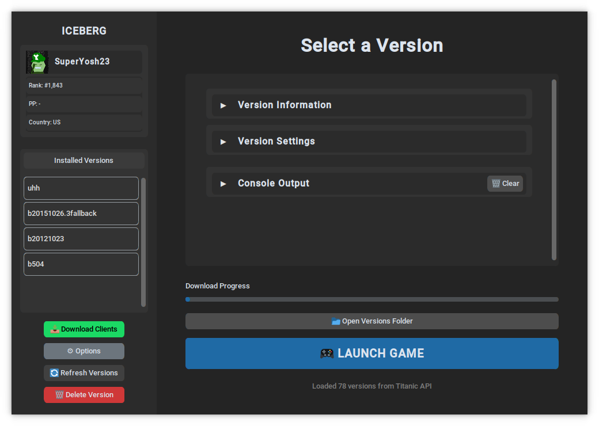
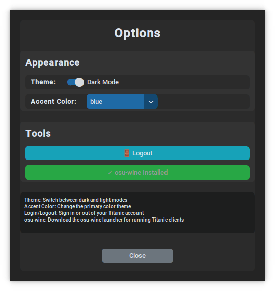
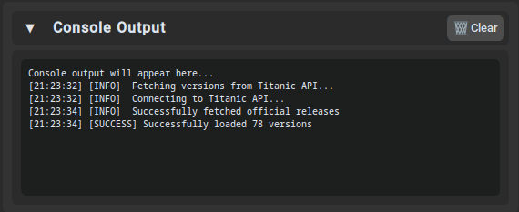

Interface Preview

Main Interface
Clean, modern interface with version management and real-time console output.

Download Dialog
Rich preview system with screenshots and descriptions for available versions.

Options Menu
Customize themes, manage login, and configure launcher settings.

Console Output
Real-time game and wine output with color-coded messages and auto-scrolling.